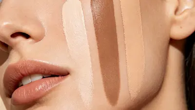
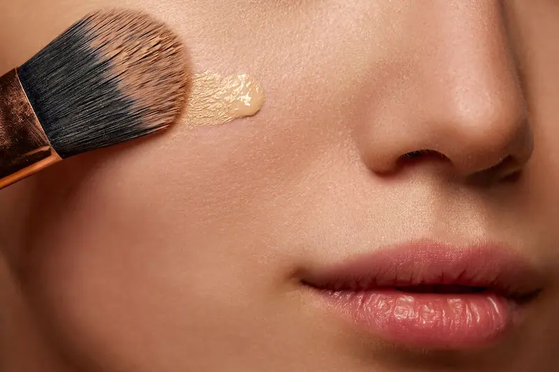

Какой профессиональный тональный крем купить для естественного финиша
Если вы ищете, какой профессиональный тональный крем купить для естественного финиша, обращайте внимание не только на оттенок, но и на текстуру, степень покрытия, тип кожи и стойкость формулы. Хороший тональный крем должен выравнивать тон кожи и скрывать небольшие несовершенства, сохраняя при этом естественный вид кожи без эффекта маски.
В этом обзоре мы рассмотрим профессиональные тональные средства с разными формулами и финишем, а также разберём, какие варианты лучше подходят для сухой, жирной, комбинированной и чувствительной кожи. Вы также узнаете, как выбрать подходящий оттенок, степень покрытия и тональный крем для повседневного или профессионального макияжа.
Подобрать специалистаНе уверены, какое средство выбрать?
Если сложно подобрать уходовую или декоративную косметику самостоятельно, вы можете получить персональную консультацию специалиста.
- ✔ Подбор ухода по типу кожи
- ✔ Подбор декоративной косметики
- ✔ Индивидуальные рекомендации
Популярные обзоры тональных кремов
Профессиональные тональные кремы с естественным финишем
Узнайте о профессиональных формулах, которые обеспечивают естественный, ровный вид кожи без эффекта маски.
Лучшие тональные кремы для сухой кожи
Подборка средств с хорошим увлажнением и натуральным финишем.
Лучшие тональные кремы для жирной кожи
Матирующие средства с хорошей стойкостью.
Лучшие тональные кремы для комбинированной кожи
Формулы, которые балансируют сухие и жирные зоны.
Лучшие тональные кремы для чувствительной кожи
Гипоаллергенные средства без раздражающих компонентов.
Тональные кремы с лёгким покрытием
Выравнивают тон кожи без плотного слоя.
Стойкие тональные кремы
Лучшие варианты для долгого дня.
Как выбрать подходящий оттенок
Руководство по выбору подходящего оттенка и подтона для вашей кожи.
Естественный, матовый или сияющий финиш
Сравните основные виды финиша и выберите подходящий вариант.
Профессиональный тональный крем для дневного макияжа
Как выбрать комфортный тональный крем для ежедневного использования.
Почему тональный крем выглядит неестественно?
Правильный оттенок — только начало. На естественный результат влияют тип кожи, финиш, степень покрытия, подготовка кожи и техника нанесения. В Estetica Lens мы разбираем тональные средства и помогаем понять, какой вариант лучше подходит именно вам.


Как выбрать профессиональный тональный крем для естественного финиша
Если вы задаетесь вопросом, какой профессиональный тональный крем купить для естественного финиша, в первую очередь обращайте внимание на то, как средство ложится на кожу. Подходящий тональный крем должен выравнивать тон кожи, скрывать небольшие несовершенства и при этом сохранять естественный вид кожи без заметного эффекта маски.
Для естественного результата визажисты обычно выбирают формулы с легкой или средней текстурой и наслаиваемым покрытием. Они позволяют нанести тонкий слой на все лицо, а затем добавить немного продукта только на участки, где требуется дополнительное покрытие.
Выбирайте финиш, близкий к естественному виду кожи
Естественный финиш не должен быть ни полностью матовым, ни чрезмерно сияющим. После нанесения кожа должна выглядеть ровной, свежей и естественной, без ощущения плотного слоя косметики.
Отдавайте предпочтение наслаиваемому покрытию
Легкое или среднее покрытие проще контролировать. Начните с тонкого слоя, а затем постепенно добавляйте продукт только в тех местах, где требуется больше покрытия.
Учитывайте тип кожи
Для сухой кожи хорошо подходят комфортные и увлажняющие формулы, которые не подчеркивают сухость. Для жирной кожи может быть полезна формула с умеренным контролем себума и естественным или полуматовым финишем. Комбинированной коже часто подходят сбалансированные формулы, которые можно наносить по-разному на разные зоны лица.
Проверяйте оттенок и подтон
Даже отличная формула может выглядеть неестественно, если оттенок подобран неправильно. Перед покупкой учитывайте не только глубину оттенка, но и подтон кожи.
Для профессионального макияжа универсальность формулы не менее важна, чем ее финиш. Тональный крем, который можно нанести очень тонким слоем, а затем локально усилить покрытие, дает больше контроля над итоговым результатом. Такой подход позволяет создать естественный макияж как на каждый день, так и для фотосессии или мероприятия.
Советы визажистов для естественного финиша тонального крема

Даже хороший профессиональный тональный крем может выглядеть слишком плотным, если нанести его в большом количестве или на неподготовленную кожу. Для естественного финиша важны не только формула и оттенок средства, но и подготовка кожи, количество продукта и техника нанесения.
Хорошо подготовьте кожу
Перед макияжем очистите и увлажните кожу и дайте уходовым средствам впитаться. Хорошо подготовленная кожа помогает тональному крему распределяться равномернее и выглядеть естественнее.
Начинайте с тонкого слоя
Нанесите небольшое количество тонального крема на все лицо и постепенно добавляйте продукт только там, где требуется дополнительное покрытие. Такой подход помогает избежать эффекта маски.
Тщательно растушёвывайте
Используйте кисть, спонж или пальцы в зависимости от формулы средства. Особенно тщательно растушёвывайте тональный крем у линии роста волос, на подбородке и возле ушей, чтобы переходы оставались незаметными.
Не перегружайте отдельные зоны
Для естественного результата не обязательно наносить одинаковое количество продукта на всё лицо. Увеличивайте покрытие только там, где нужно скрыть покраснения или другие заметные несовершенства.
Если вы хотите получить профессиональный макияж с естественным финишем, старайтесь сохранить максимально тонкий слой тонального крема на тех участках, где высокая степень покрытия не требуется. После нанесения проверьте макияж при естественном освещении и при необходимости удалите излишки продукта чистым спонжем.
Нужен профессиональный макияж?
Если вы хотите подобрать идеальный тон или сделать профессиональный макияж, обратитесь к визажисту.
Посмотреть услуги визажистов

Лучшие тональные кремы для сухой кожи
Для сухой кожи лучше выбирать профессиональные тональные средства с комфортной увлажняющей текстурой и естественным или слегка сияющим финишем. Такие формулы помогают визуально выровнять тон кожи, не подчеркивая шелушения и ощущение сухости. Для естественного результата особенно хорошо подходят тональные кремы с лёгким или средним наслаиваемым покрытием: их можно нанести тонким слоем на всё лицо, а при необходимости добавить немного продукта на участки с покраснениями или несовершенствами. Перед нанесением важно хорошо увлажнить кожу, чтобы тональный крем распределялся равномерно и выглядел максимально естественно.
Независимый обзор. Продукты не спонсируются.
*Данный материал является независимым редакционным обзором и не
спонсируется производителем или продавцом продукта.
*Все названия брендов, товарные знаки и наименования продукции
принадлежат их законным правообладателям и используются
исключительно в информационных и редакционных целях.
*Представленная информация отражает мнение автора и не является
официальной рекомендацией производителя.
*Ссылки приведены в ознакомительных целях. При наличии
партнёрства здесь может быть размещена прямая ссылка на
продукт.

Лучшие тональные кремы для жирной кожи
Для жирной кожи лучше выбирать профессиональные тональные средства с лёгкой текстурой, хорошей стойкостью и естественным или полуматовым финишем. Такие формулы помогают контролировать выраженный блеск, сохраняя при этом аккуратный и естественный вид кожи. Для дневного и профессионального макияжа удобно использовать тональный крем с лёгким или средним наслаиваемым покрытием, чтобы не перегружать кожу и при необходимости усилить покрытие только в отдельных зонах. Если кожа склонна к жирности, перед нанесением также важно использовать подходящую базу и не наносить слишком большое количество тонального средства.
Независимый обзор. Продукты не спонсируются.
*Данный материал является независимым редакционным обзором и не
спонсируется производителем или продавцом продукта.
*Все названия брендов, товарные знаки и наименования продукции
принадлежат их законным правообладателям и используются
исключительно в информационных и редакционных целях.
*Представленная информация отражает мнение автора и не является
официальной рекомендацией производителя.
*Ссылки приведены в ознакомительных целях. При наличии
партнёрства здесь может быть размещена прямая ссылка на
продукт.
Лучшие тональные кремы для комбинированной кожи
Для комбинированной кожи оптимальным выбором часто становятся профессиональные тональные средства со сбалансированной текстурой и естественным финишем. Они должны комфортно выглядеть на более сухих участках и одновременно не создавать чрезмерного блеска в Т-зоне. Хороший вариант для такого типа кожи — тональный крем с лёгким или средним покрытием, которое можно распределить тонким слоем по всему лицу и при необходимости дополнительно нанести на участки с покраснениями или несовершенствами. При нанесении можно использовать разное количество продукта в зависимости от особенностей отдельных зон.
Независимый обзор. Продукты не спонсируются.
*Данный материал является независимым редакционным обзором и не
спонсируется производителем или продавцом продукта.
*Все названия брендов, товарные знаки и наименования продукции
принадлежат их законным правообладателям и используются
исключительно в информационных и редакционных целях.
*Представленная информация отражает мнение автора и не является
официальной рекомендацией производителя.
*Ссылки приведены в ознакомительных целях. При наличии
партнёрства здесь может быть размещена прямая ссылка на
продукт.
Лучшие тональные кремы для чувствительной кожи
Для чувствительной кожи стоит выбирать профессиональные тональные средства с комфортной формулой, которые не создают ощущения стянутости и не подчеркивают неровности поверхности кожи. Для естественного финиша хорошо подходят лёгкие и средние покрытия с мягкой текстурой, которые легко распределяются и не требуют нанесения плотного слоя. Перед покупкой желательно обратить внимание на состав средства и индивидуальную переносимость отдельных компонентов. Если кожа часто реагирует на косметику, новый тональный крем лучше предварительно протестировать на небольшом участке кожи.
Независимый обзор. Продукты не спонсируются.
*Данный материал является независимым редакционным обзором и не
спонсируется производителем или продавцом продукта.
*Все названия брендов, товарные знаки и наименования продукции
принадлежат их законным правообладателям и используются
исключительно в информационных и редакционных целях.
*Представленная информация отражает мнение автора и не является
официальной рекомендацией производителя.
*Ссылки приведены в ознакомительных целях. При наличии
партнёрства здесь может быть размещена прямая ссылка на
продукт.
Тональные кремы с лёгким покрытием
Если нужен максимально естественный результат, обратите внимание на профессиональные тональные средства с лёгким покрытием. Они мягко выравнивают тон кожи, делают цвет лица более однородным и при этом сохраняют естественную текстуру кожи. Такие формулы особенно удобны для дневного макияжа, когда не требуется полностью скрывать все несовершенства. Для более аккуратного результата наносите небольшое количество тонального крема тонким слоем, а при необходимости добавляйте продукт только на отдельные участки.
Независимый обзор. Продукты не спонсируются.
*Данный материал является независимым редакционным обзором и не
спонсируется производителем или продавцом продукта.
*Все названия брендов, товарные знаки и наименования продукции
принадлежат их законным правообладателям и используются
исключительно в информационных и редакционных целях.
*Представленная информация отражает мнение автора и не является
официальной рекомендацией производителя.
*Ссылки приведены в ознакомительных целях. При наличии
партнёрства здесь может быть размещена прямая ссылка на
продукт.
Стойкие тональные кремы
Если макияж должен сохранять аккуратный вид в течение длительного времени, выбирайте профессиональные тональные средства с хорошей стойкостью и комфортной текстурой. Важно, чтобы формула не только долго держалась, но и не выглядела слишком плотной после нескольких часов носки. Для естественного финиша оптимальным вариантом может стать стойкий тональный крем с лёгким или средним наслаиваемым покрытием. Перед нанесением подготовьте кожу и используйте умеренное количество продукта — это поможет сохранить ровный и естественный результат на протяжении дня.
Независимый обзор. Продукты не спонсируются.
*Данный материал является независимым редакционным обзором и не
спонсируется производителем или продавцом продукта.
*Все названия брендов, товарные знаки и наименования продукции
принадлежат их законным правообладателям и используются
исключительно в информационных и редакционных целях.
*Представленная информация отражает мнение автора и не является
официальной рекомендацией производителя.
*Ссылки приведены в ознакомительных целях. При наличии
партнёрства здесь может быть размещена прямая ссылка на
продукт.
Как выбрать подходящий оттенок тонального крема


Правильно подобранный оттенок играет важную роль, если вы хотите получить естественный финиш. Недостаточно выбрать цвет, который кажется похожим на кожу: необходимо учитывать и ее подтон. Слишком светлый, темный или неподходящий по подтону тональный крем может сделать макияж заметным, даже если его текстура и финиш подходят вашей коже.
Определите подтон кожи
Подтон кожи может быть теплым, холодным или нейтральным. Обратите внимание на оттенок вен и на то, какие украшения — золотые или серебряные — лучше гармонируют с вашей кожей.
Тестируйте оттенок на линии подбородка
Чтобы получить максимально естественное совпадение с лицом и шеей, тестируйте тональный крем в области линии подбородка, а не только на запястье или руке.
Проверяйте оттенок при естественном освещении
Искусственный свет может менять восприятие цвета. Если есть возможность, проверьте оттенок при дневном освещении перед покупкой.
Дайте тональному крему немного времени
Некоторые формулы могут немного измениться после нанесения. Подождите несколько минут и только после этого оценивайте, насколько оттенок подходит вашей коже.
Естественный, матовый или сияющий финиш
Финиш тонального крема во многом определяет итоговый вид макияжа. Если вы хотите, чтобы кожа выглядела максимально естественно, универсальным вариантом обычно является естественный финиш. Матовый финиш уменьшает выраженность блеска и может подойти жирной коже, а сияющий создает более свежий и светящийся эффект и часто хорошо смотрится на сухой или нормальной коже.
Естественный финиш
Сохраняет баланс между матовыми и более светлыми участками, благодаря чему кожа выглядит ровной, но не теряет естественную текстуру. Это универсальный вариант для повседневного и профессионального макияжа.
Матовый финиш
Визуально уменьшает блеск и может помочь контролировать его появление в течение дня. Особенно подходит для жирной и комбинированной кожи, однако слишком матовая формула может подчеркнуть сухие участки.
Сияющий финиш
Придает коже более свежий и сияющий вид. Такой вариант может хорошо подходить нормальной и сухой коже, но на очень жирной коже способен выглядеть слишком блестящим в течение дня.
Какой финиш выбрать?
Если вы не уверены, какой вариант подойдет именно вам, естественный финиш обычно является наиболее универсальным выбором. Учитывайте тип кожи, желаемую степень покрытия и общий эффект, которого хотите достичь.
Для профессионального макияжа с естественным результатом необязательно добиваться одинаковой степени сияния на всех участках лица. Финиш можно контролировать количеством продукта, способом нанесения и фиксацией отдельных зон.
Профессиональный тональный крем для дневного макияжа
Для дневного макияжа профессиональный тональный крем должен сочетать хорошее покрытие, комфорт и стойкость. Если вы хотите получить естественный результат, выбирайте формулу с легкой или средней текстурой и естественным финишем, которая выравнивает тон кожи, не создавая ощущения плотного слоя.
Для повседневного макияжа не всегда требуется высокая степень покрытия. Тональный крем с легким или средним покрытием можно нанести тонким слоем на все лицо, а затем добавить немного продукта только на участки с покраснениями или заметными несовершенствами.
Выбирайте комфортную текстуру
Для макияжа, который носится много часов, легкая и хорошо растушевываемая текстура обеспечивает больший комфорт и помогает сохранить естественный вид кожи.
Отдавайте предпочтение наслаиваемому покрытию
Формула с возможностью наслаивания позволяет начать с тонкого слоя и добавить больше продукта только там, где это действительно необходимо.
Учитывайте стойкость
Для продолжительного рабочего дня полезно выбирать тональный крем, который сохраняет равномерный вид и не требует частых поправок.
Не перегружайте кожу
Слишком большое количество продукта может сделать макияж неестественным. Начинайте с небольшого количества и постепенно увеличивайте покрытие только при необходимости.
Часто задаваемые вопросы о профессиональных тональных кремах
Какой профессиональный тональный крем подходит для естественного финиша?
Для естественного финиша лучше выбирать тональный крем с лёгкой или средней текстурой и наслаиваемым покрытием. Он должен равномерно выравнивать тон кожи, не создавая плотного слоя и эффекта маски.
Какой тональный крем подходит для сухой кожи?
Для сухой кожи хорошо подходят комфортные увлажняющие формулы с естественным или слегка сияющим финишем. Желательно выбирать средства, которые не подчеркивают шелушения и не создают ощущения стянутости.
Какой тональный крем подходит для жирной кожи?
Для жирной кожи можно выбрать профессиональный тональный крем с лёгкой текстурой, хорошей стойкостью и естественным или полуматовым финишем. Такие формулы помогают контролировать выраженный блеск и сохранять аккуратный вид макияжа.
Какой тональный крем выбрать для комбинированной кожи?
Для комбинированной кожи подходят сбалансированные формулы с естественным или полуматовым финишем. Удобнее всего использовать средство с наслаиваемым покрытием, чтобы наносить больше продукта только на те зоны, где это необходимо.
Подходит ли тональный крем с лёгким покрытием для естественного результата?
Да. Лёгкое покрытие позволяет выровнять тон кожи, сохраняя её естественную текстуру. При необходимости покрытие можно постепенно увеличить на отдельных участках лица.
Как выбрать подходящий оттенок тонального крема?
При выборе оттенка учитывайте не только глубину цвета, но и подтон кожи: холодный, тёплый или нейтральный. Для наиболее естественного совпадения оттенок желательно тестировать в области линии подбородка и оценивать при естественном освещении.
Какой тональный крем выбрать для длительного макияжа?
Для длительного макияжа стоит выбирать профессиональную формулу с хорошей стойкостью, которая сохраняет равномерное покрытие в течение дня. Оптимальный вариант зависит от типа кожи, желаемого финиша и необходимой степени покрытия.
Как сделать так, чтобы тональный крем выглядел максимально естественно?
Подготовьте кожу, нанесите небольшое количество тонального крема тонким слоем и тщательно растушуйте его. Дополнительное покрытие наносите только на участки, где оно действительно необходимо. Такой способ помогает сохранить естественный вид кожи без эффекта маски.